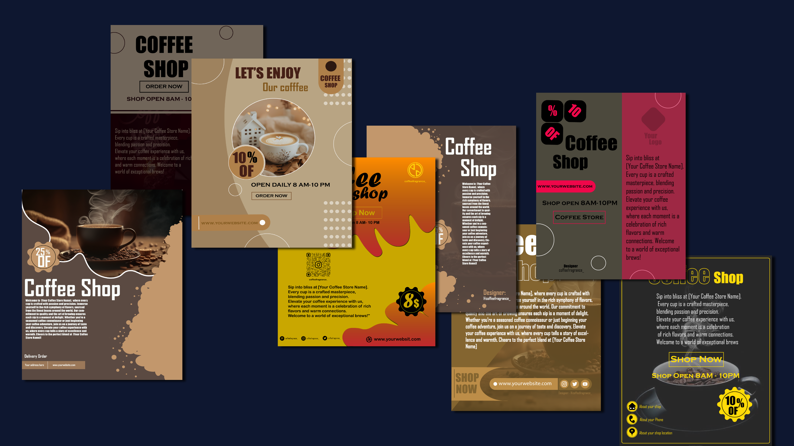
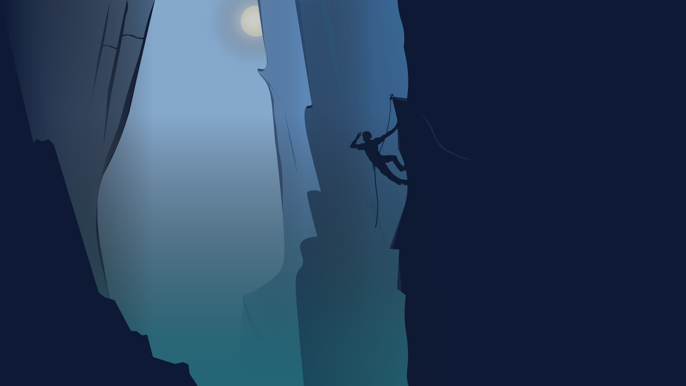
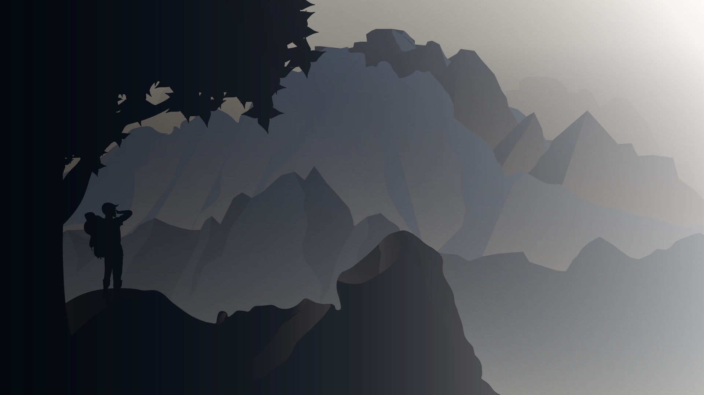

Portfolio
Explore some of my creative works and design projects.
Graphic design is a captivating and dynamic field that plays a pivotal role in shaping the way we perceive and interact with the world. Rooted in creativity and driven by a blend of artistic prowess and technical skills, graphic design is the art of visual communication. It's a discipline that goes beyond mere aesthetics; it's about conveying messages, telling stories, and influencing emotions through the strategic use of images, colors, typography, and layout. In this essay, we delve into the diverse facets of graphic design, exploring its history, principles, contemporary significance, and the impact it has on various aspects of our lives.
Historical Evolution: From Print to Digital
The roots of graphic design can be traced back to the invention of the printing press in the 15th century. With the advent of mass production, the need for visually appealing and communicative printed materials arose. Early graphic design was characterized by intricate typography and illustrations, often found in books, posters, and newspapers.
The 20th century witnessed a significant transformation in graphic design, marked by movements such as Art Nouveau, Bauhaus, and Art Deco. These movements not only influenced design aesthetics but also laid the groundwork for design principles that continue to shape the industry today. The mid-20th century saw the emergence of corporate branding and the iconic work of designers like Paul Rand and Saul Bass, who created timeless logos that are still relevant and impactful.
The digital revolution of the late 20th century brought about a paradigm shift in graphic design. The introduction of computers and design software opened up new possibilities, enabling designers to create, edit, and manipulate visual elements with unprecedented precision. This transition from traditional to digital tools expanded the scope of graphic design, making it more accessible and versatile.
Principles of Graphic Design: The Building Blocks
At the core of graphic design lie several fundamental principles that guide designers in creating compelling and effective visual communication. These principles include balance, contrast, alignment, repetition, proximity, and space. Achieving a harmonious balance between these elements is crucial for creating designs that are not only aesthetically pleasing but also functional and purposeful.
Balance: Balance refers to the distribution of visual weight in a design. Achieving balance ensures that no single element overpowers the others, creating a sense of equilibrium.
Contrast: Contrast involves juxtaposing different elements to create visual interest. This could be variations in color, size, or type. Contrast helps highlight key elements and guide the viewer's attention.
Alignment: Alignment establishes a visual connection between elements, contributing to a sense of order and organization. Proper alignment enhances readability and clarity in design.
Repetition: Repetition creates consistency and unity in a design. Consistent use of visual elements, such as colors, fonts, or shapes, reinforces the overall message and identity.
Proximity: Proximity refers to the placement of related elements close to each other. Grouping related elements enhances the organization of information and helps convey relationships.
Space: Space, both positive and negative, is a crucial aspect of design. It allows elements to breathe and influences the overall composition. Effective use of space enhances readability and visual flow.
Contemporary Significance: Graphic Design in the Digital Age
In the contemporary landscape, graphic design plays a central role in shaping the visual identity of individuals, businesses, and organizations. The rise of social media and online platforms has intensified the demand for visually engaging content. From websites and mobile apps to social media posts and digital advertisements, graphic design is omnipresent in the digital age.
User experience (UX) design, a subset of graphic design, focuses on creating seamless and enjoyable interactions between users and digital interfaces. UX designers consider factors such as usability, accessibility, and user satisfaction, ensuring that the visual elements contribute to a positive overall experience.
Branding, a key component of graphic design, extends beyond logos and visual assets. It encompasses the development of a cohesive visual language that reflects the values and personality of a brand. Consistent and impactful branding builds brand recognition and fosters a strong connection with the audience.
Infographics, another manifestation of graphic design, have become a popular tool for presenting complex information in a visually digestible format. Whether used in educational materials, reports, or presentations, infographics leverage visual elements to enhance understanding and retention of information.
Impact on Society and Culture: Beyond Aesthetics
Graphic design has a profound impact on society and culture, influencing the way we perceive and interpret information. In the realm of advertising, persuasive graphic design can shape consumer behavior and influence purchasing decisions. Logos become symbols that represent not just products but entire narratives and values associated with brands.
In journalism and media, graphic design aids in storytelling by visually enhancing news articles, magazines, and online publications. Illustrations, layout design, and visual hierarchy contribute to effective communication and audience engagement.
Cultural movements and social causes often find expression through graphic design. Posters, banners, and digital campaigns serve as powerful tools for conveying messages, rallying support, and advocating for change. Iconic images, such as the peace sign or protest posters, have become synonymous with social movements.
Challenges and Future Trends: Navigating the Evolving Landscape
As technology continues to advance, graphic designers face new challenges and opportunities. The rapid pace of digital innovation requires designers to stay abreast of emerging trends and constantly update their skill sets. The integration of artificial intelligence (AI) and automation in design processes raises questions about the role of human creativity in a technology-driven landscape.
Responsive design, accommodating various screen sizes and devices, has become a standard requirement. Designers must ensure that their creations are not only visually appealing on large monitors but also functional and user-friendly on smartphones and tablets.
Environmental sustainability is gaining prominence in the design industry. Designers are increasingly mindful of the ecological impact of their work, considering factors such as paper usage, printing methods, and the life cycle of digital devices.
Augmented reality (AR) and virtual reality (VR) present exciting avenues for graphic designers to explore immersive and interactive design experiences. These technologies have the potential to revolutionize how users engage with visual content, opening up new dimensions of creativity.
In conclusion, graphic design is a multifaceted discipline that weaves together art, technology, and communication. Its evolution from traditional print to the digital realm reflects the dynamic nature of the field. As graphic designers navigate the challenges and embrace the possibilities of the future, the essence of their craft remains rooted in the power of visual communication to inform, inspire, and connect. In a world inundated with visuals, graphic design stands as a testament to the enduring impact of well-crafted images and the boundless potential of human creativity.

Posters
Presenting an exquisite addition to my portfolio—a meticulously crafted poster design that transcends the ordinary. This visual masterpiece harmonizes striking imagery, compelling typography, and a thoughtful layout to convey a message that resonates. Every element is a brushstroke, carefully chosen to evoke emotions and capture attention. With a keen eye for detail and a passion for storytelling, this poster reflects my commitment to transforming ideas into visually compelling narratives. Explore the intersection of art and communication through this poster—a testament to my dedication to creating designs that leave a lasting impression.

illustration
Step into the enchanting realm of my illustration design showcased in this portfolio gem. Each stroke of the digital brush tells a unique story, weaving together imagination and creativity. From whimsical characters to intricate scenes, my illustrations breathe life into concepts, leaving an indelible mark on the viewer. This collection reflects not just technical skill but a passion for storytelling, where every detail serves a purpose. Delve into the world of my illustration design—a testament to my commitment to transforming ideas into captivating visual narratives that linger in the imagination long after the first glance.

2 nd illustration
Welcome to Graphic Glowforge family!
Hey wonderful folks! I'm Ashraf, your go-to graphic designer, and I'm all about turning creative sparks into visual fireworks! Picture this: a canvas filled with vibrant colors, sleek logos, and illustrations that dance off the page. That's where the magic happens! My name is Ashraf, and I'm here to bring a friendly touch to your design dreams. From crafting logos that tell your story to illustrations that add that 'wow' factor, I'm on a mission to make your vision pop! Let's dive into the world of pixels and creativity together where every project is a chance to turn ideas into unforgettable visual experiences. Excited to make some design magic with you!
About Us
Unveiling the Creative Spirit of Ashraf
Hello there, lovely souls! I'm Ashraf, the creative force behind the pixels, the magic maker in the world of graphics. Welcome to my corner of creativity, where every design unfolds a unique story.
Who's Behind the Designs?
That would be me – Ashraf! A graphic designer on a mission to transform your ideas into visual masterpieces. I thrive on the magic of colors, the dance of shapes, and the endless possibilities that come alive on a canvas.
Why Choose Me?
Beyond the pixels, what sets my designs apart is the passion I pour into each project. I believe in more than just creating visuals; I'm here to craft experiences. Whether it's a sleek logo, an enchanting illustration, or a layout that sings, I'm committed to making your vision shine.
What's My Design Philosophy?
In a world inundated with visuals, I strive for more than aesthetics. My designs are a blend of your unique story and my creative flair. Every curve, color, and concept is a carefully chosen brushstroke in the larger canvas of your brand identity.
Let's Create Together!
Enough about me; let's talk about you! I'm here to collaborate, ideate, and bring your dreams to life visually. Your project isn't just another task – it's an opportunity to co-create something spectacular.
So, buckle up for a creative journey. Whether you're an entrepreneur, dreamer, or a fellow lover of all things beautiful, let's embark on this design adventure together!
Ready to infuse some magic into your visuals? Let's chat!
Cheers,
Ashraf
About Our Services
Services That Paint Your Vision into Reality
Greetings! I'm Ashraf, your dedicated graphic designer, and I'm thrilled to introduce you to a world where creativity meets functionality. Here's a glimpse into the design services that will elevate your brand and bring your ideas to life.
1. Striking Visual Identities
Your brand deserves to stand out, and I'm here to make it happen. From crafting memorable logos that embody your essence to establishing cohesive visual identities, I specialize in creating the visual language that speaks uniquely to your audience.
2. Illustrations that Tell Stories
Ever wished your ideas could jump off the page? Through captivating illustrations, I bring narratives to life. Whether it's a whimsical character, an intricate infographic, or an expressive scene, let's tell your story in a way that captivates and resonates.
3. Eye-Catching Print and Digital Designs
From business cards to digital banners, my design expertise extends across both print and digital realms. I'm here to ensure that your materials not only look good but also communicate effectively, leaving a lasting impression on your audience.
4. Collaborative Design Workshops
Let's not just create; let's innovate together! I offer collaborative design workshops where we can ideate, brainstorm, and turn your ideas into tangible design concepts. It's a journey we embark on together, ensuring that your input shapes the creative process.
And all my services are included in the services section above